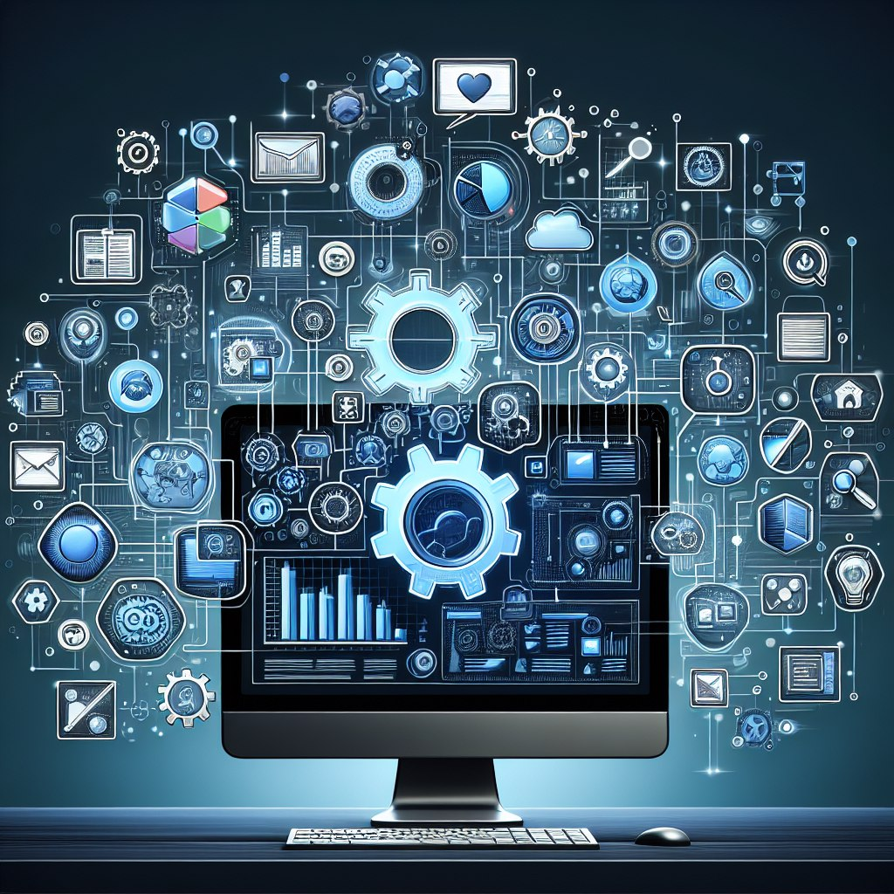
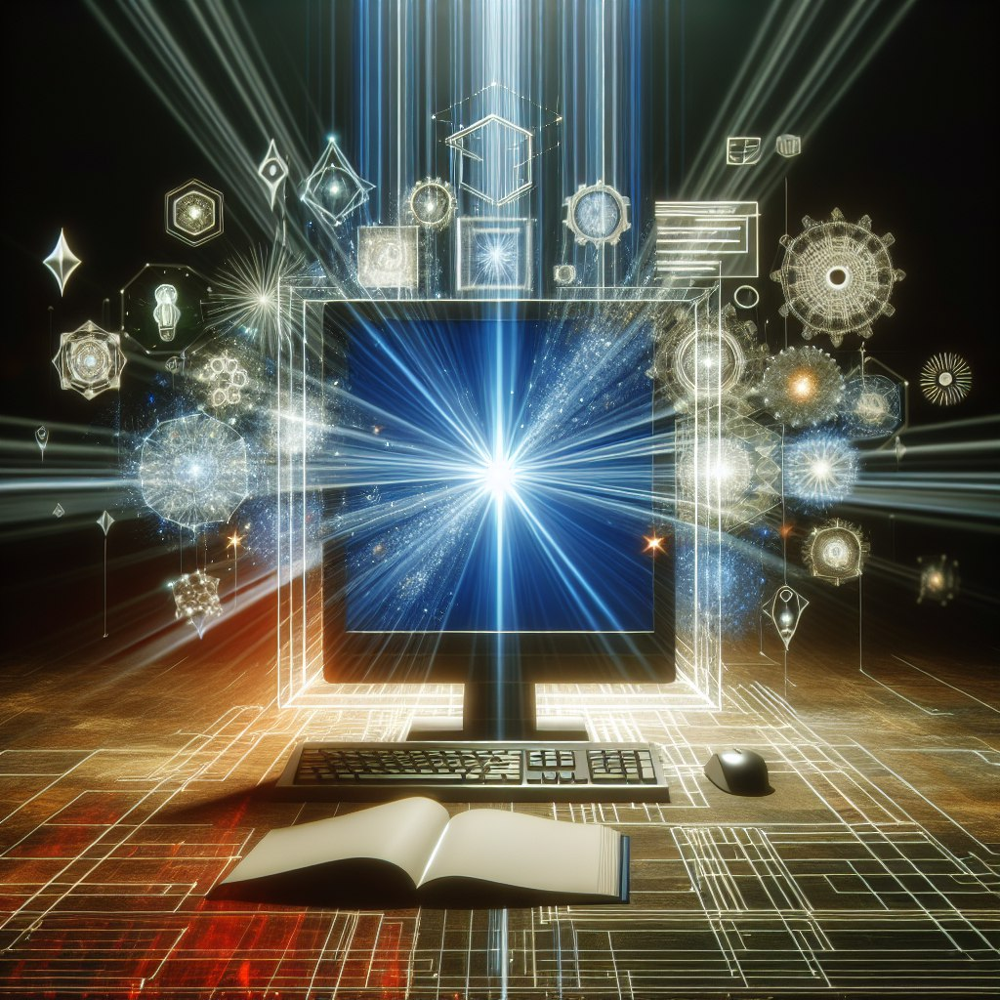
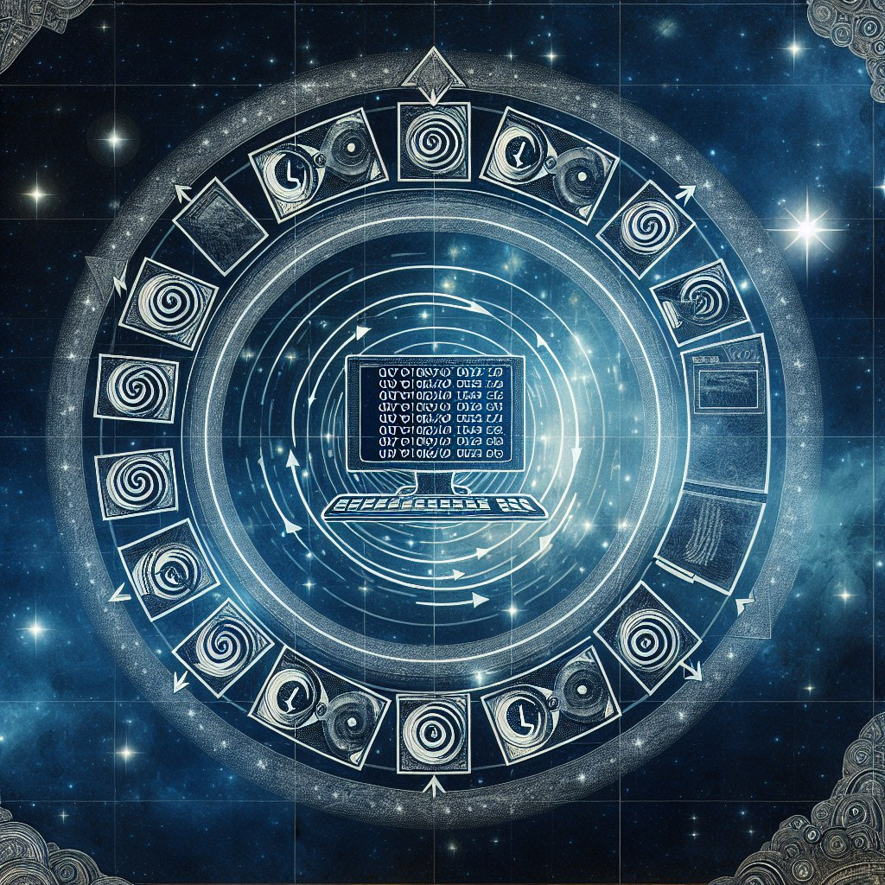

💾 El Software: Tecnología Moderna 💾

El software es una parte esencial de la tecnología moderna que impulsa la mayoría de los dispositivos y sistemas que utilizamos en nuestra vida diaria. Se define como un conjunto de programas, algoritmos y datos que permiten a las máquinas realizar diversas tareas y funciones de manera eficiente y automatizada.
🧾 Características del Software 🧾
1. Flexibilidad: El software puede adaptarse y modificarse fácilmente para satisfacer nuevas necesidades y requisitos del usuario.
2. Escalabilidad: Puede crecer y adaptarse a medida que aumentan los requisitos de procesamiento y almacenamiento.
3. Mantenibilidad: Debe ser fácil de mantener y actualizar para corregir errores y agregar nuevas funcionalidades.
4. Eficiencia: Debe ser optimizado para utilizar eficazmente los recursos del sistema y garantizar un rendimiento óptimo.
📱 Tipos de Software 📱
Software de Sistema: Controla el hardware y proporciona una plataforma para que otros programas se ejecuten. Ejemplos: sistemas operativos, controladores de dispositivo.
Software de Aplicación: Diseñado para realizar tareas específicas para el usuario final. Ejemplos: procesadores de texto, hojas de cálculo, navegadores web.
Software de Desarrollo: Herramientas utilizadas por los programadores para desarrollar, probar y mantener programas. Ejemplos: entornos de desarrollo integrados (IDE), compiladores.
🔧 Ciclo de Vida del Software 🔧
1. Recolección de Requisitos: Entender las necesidades del cliente para definir los objetivos del software.
2. Diseño: Crear una estructura lógica y física del software.
3. Implementación: Codificar el software según el diseño.
4. Pruebas: Verificar y validar el software para garantizar su correcto funcionamiento.
5. Implantación: Instalar y poner en funcionamiento el software.
6. Mantenimiento: Corregir errores, realizar mejoras y actualizar el software según sea necesario.
🔌 El Poder Transformador del Software en la Era Digital 🔌

En el tejido de la tecnología moderna, el software se manifiesta como el motor invisible que impulsa la innovación y transformación digital en todas las esferas de la sociedad. Este compendio de algoritmos, datos y programas se erige como el cimiento sobre el cual se construyen las maravillas digitales del siglo XXI.
Diseñando el Futuro:
El software se erige como una herramienta moldeable y versátil que se adapta a las necesidades cambiantes de la sociedad. Desde sistemas operativos que controlan la esencia misma de nuestros dispositivos hasta aplicaciones especializadas que simplifican nuestras tareas diarias, el software se convierte en el hilo conductor que une el mundo físico con el digital.
💿 Capas del Software 💿
Software de Sistema: Los pilares invisibles que administran el hardware y proporcionan una base estable para la ejecución de otros programas. Ejemplos emblemáticos incluyen los sistemas operativos y los controladores de dispositivos.
Software de Aplicación: Las herramientas cotidianas que facilitan nuestras interacciones digitales, desde procesadores de texto hasta aplicaciones de redes sociales que conectan a personas en todo el mundo.
Software de Desarrollo: Las poderosas herramientas utilizadas por los creadores para dar vida a nuevas ideas y soluciones. Estos incluyen los entornos de desarrollo integrados (IDE) que potencian la creatividad y la productividad de los programadores.
🔄 El Ciclo Eterno del Software 🔄
Inspiración y Creación: Desde la concepción de una idea hasta la transformación en código, el proceso de creación de software es un ballet artístico entre la mente creativa y la lógica implacable.
Evolución y Mejora: A medida que el software se despliega en el mundo, la retroalimentación de los usuarios impulsa su evolución continua. Las actualizaciones y mejoras sostienen la relevancia del software en un paisaje digital en constante cambio.
Impacto y Legado: El software deja una huella indeleble en la sociedad, transformando la forma en que vivimos, trabajamos y nos relacionamos. Su influencia perdura más allá de su implementación inicial, dando forma al futuro de la tecnología y la innovación.

♻️ El Ciclo Eterno del Software: La Danza Infinita de la Creación Digital ♻️
En el vasto universo del software, un ciclo eterno y sagrado se despliega, marcando el ritmo de la evolución tecnológica y la creatividad humana. Este ciclo, intrínseco a la esencia misma del desarrollo de software, abarca múltiples fases que guían la concepción, nacimiento, crecimiento y legado de cada programa y aplicación.
📝 Inspiración y Creación 📝
El ciclo comienza con la chispa de la inspiración, cuando una idea revive en la mente de un creador. Desde la semilla de la creatividad, se inicia el proceso de transformar conceptos abstractos en código concreto. Aquí, los diseñadores, programadores y arquitectos de software se unen en una sinfonía de colaboración para crear la estructura lógica que dará vida al software.
⛏️ Desarrollo y Refinamiento ⛏️
Una vez que la idea toma forma, comienza la fase de desarrollo y refinamiento. Los equipos de desarrollo trabajan incansablemente para traducir los requisitos del usuario en líneas de código, depurando, optimizando y probando cada funcionalidad. En este proceso, el software evoluciona y se perfecciona, adaptándose a las necesidades del usuario y respondiendo a los desafíos tecnológicos actuales.
🔗 Implementación y Despliegue 🔗
Con el software desarrollado y probado, llega el momento crucial de la implementación y el despliegue. Los ingenieros de software llevan a cabo la instalación y puesta en marcha del programa, asegurándose de que funcione de manera eficiente en el entorno tecnológico previsto. Este paso marca la culminación de los esfuerzos de desarrollo y abre las puertas para que el software comience su viaje en el mundo digital.
🛠️ Mantenimienta y mejora 🛠️
A medida que el software se pone en uso, el ciclo continúa con la fase de mantenimiento y mejora. Aquí, los equipos de desarrollo monitorean el rendimiento del software, corrigen errores, implementan actualizaciones y añaden nuevas funcionalidades para garantizar su relevancia y eficacia a lo largo del tiempo. Este ciclo de mejora continua alimenta la longevidad y adaptabilidad del software en un entorno tecnológico cambiante.
💥 Impacto y Legado 💥
Finalmente, el software deja una huella imborrable en la historia digital, marcando su impacto y legado en la sociedad y la tecnología. Su influencia perdura más allá de su ciclo de vida, transformando industrias, empoderando a los usuarios y abriendo nuevos horizontes de creatividad y posibilidades. Así, el ciclo eterno del software se entrelaza con la evolución misma de la tecnología y la innovación, forjando el camino hacia un futuro digital ilimitado y prometedor.